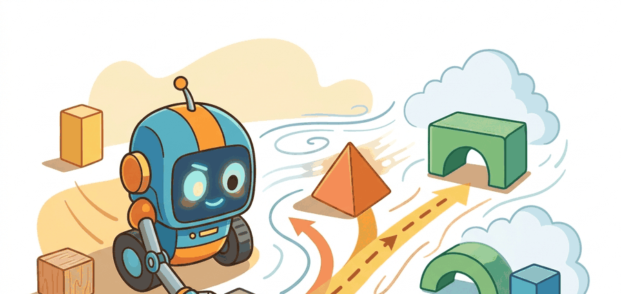

"Diffusion earns its quality by taking many small steps. Flow matching asks whether you can draw a straight line and be done with it."
Section 22.5

This section assumes familiarity with the DDPM denoising process and the action-chunk framing introduced in section 22.4. The vector-field perspective developed here reappears in section 22.6, where discrete tokens replace continuous trajectories and the speed-versus-expressiveness tradeoff is revisited. The latency and multimodality arguments carry forward into Part VII: section 35.3 applies similar fast samplers to cross-embodiment foundation models that must generate actions across heterogeneous robot bodies.
A robot arm hovers over a cluttered counter, waiting for its policy to sample the next action chunk. Diffusion takes 50 denoising steps; the arm misses its window. Flow matching draws a near-straight path from noise to action and arrives in two to four steps, keeping the robot inside its 50 ms control budget. This speed difference is not a minor optimization: it is what separates a policy that can run in real time from one that can only replay in simulation. Here you will derive the flow-matching objective, understand why a straight interpolation path makes the regression problem tractable, and implement a minimal velocity-field network you can attach to any action-chunk pipeline.
This section develops the technical contract for flow matching for actions into a usable mental model. First we define the object of study, then we connect it to the agent loop, then we test it with a compact implementation.
The key question in Flow matching for actions is practical: what must the agent know, what can it observe, what action is available, and what evidence shows that the action worked under the stated conditions?
A representation earns its place when it changes the measurable action interface. In flow matching for actions, the reader should keep asking which decision becomes easier, safer, or more reliable.
Theory
For Flow matching for actions, the practical design rule is to make the interface inspectable before optimization begins: inputs, outputs, units, latency, bounds, and failure labels should all be visible in the saved artifact.
The mechanism in Flow matching for actions is the contract between representation and action. Name what enters the module, what leaves it, which assumptions make that transformation valid, and which log would reveal a bad handoff.
Worked Example
For Flow matching for actions, keep one concrete rollout in view. A sensor reading becomes an estimate, the estimate constrains an action, the action changes the world, and the next observation confirms or contradicts the assumption. The section's idea is useful only if it improves that loop.
from pathlib import Path
dataset_root = Path("robot_demos")
for episode in sorted(dataset_root.glob("episode_*")):
print("inspect", episode.name)
print("next step: convert demonstrations to the LeRobotDataset format")Expected output: the printed trace for Flow matching for actions should expose the method configuration, the measured evidence field, and the failure label. If one of those fields is missing or unchanged under the perturbation, the example is not yet an evaluation artifact.
The from-scratch fragment should expose the assumption behind flow-matching action generation with integration steps, control frequency, and stability under partial failure. For serious runs, use LeRobot, robomimic, ACT, Diffusion Policy, VQ-BeT, ALOHA, GELLO, or UMI with the same manifest and evaluator.
Flow Matching For Continuous Action Paths
Flow matching trains a vector field that moves samples from a simple base distribution toward the data distribution. For action chunks, imagine drawing an initial noisy chunk $A_0$ and a demonstration chunk $A_1$, then training a network $v_\theta(A_t,t,o)$ to predict the velocity along a path between them. A simple linear path is:
$$A_t = (1-t)A_0 + tA_1, \quad u_t = A_1 - A_0, \quad \mathcal{L}_{FM}=\mathbb{E}\left[\|v_\theta(A_t,t,o)-u_t\|_2^2\right].$$
Picture a navigator reading a river current. At every point on the water the current tells you exactly which direction and how fast to paddle to reach the far bank. You do not need to plan the whole crossing in advance; you just read the local current, take a stroke, read again, take another stroke, and the river carries you across. Flow matching works the same way: the network learns a current at every point in action space, always pointing from wherever you are toward the demonstration data. Start anywhere in the noise cloud, feel the field, take a step, feel the field again, and a handful of steps later you arrive at a plausible action chunk because every local nudge was already aimed in the right direction.
Why linearity matters for physical robots. A straight interpolation path keeps the target velocity $u_t = A_1 - A_0$ constant across all timesteps $t$. This is not a convenience; it is a physical safety property. Curved paths require the network to predict a different velocity at every $t$, and any misprediction accumulates into joint-velocity spikes during integration. On a real arm, a sudden velocity spike can saturate actuators, trigger safety stops, or damage end-effector hardware. A constant target removes that accumulation: the training signal is the same everywhere on the path, so the learned field is smoother and integration errors stay bounded over the short chunk horizon.
How the regression works. At each training step the network sees a mid-path sample $A_t$ and must output the single constant vector pointing from $A_0$ to $A_1$. Because the target does not change with $t$, the network can treat time as a mild conditioning signal rather than the primary input. During inference, a simple Euler integrator advances $A_t$ by $\Delta t \cdot v_\theta(A_t, t, o)$ at each step. With a nearly constant field, even two to four Euler steps stay close to the true path, which is why inference is fast: the field is easy to follow, not just easy to compute.
Algorithm: Flow Matching Policy Training and Inference
Input: demonstration dataset $\mathcal{D} = \{(o^i, A_1^i)\}$, vector field network $v_\theta$, integration steps $N$, learning rate $\alpha$
Output: trained policy $\pi_\theta$ mapping observations $o$ to action chunks $\hat{A}_1$
- Sample a demonstration pair $(o, A_1) \sim \mathcal{D}$ and draw noise $A_0 \sim \mathcal{N}(0, I)$.
- Sample a timestep $t \sim \mathrm{Uniform}(0, 1)$ and form the interpolated chunk $A_t = (1-t)A_0 + t A_1$.
- Compute the target velocity $u_t = A_1 - A_0$ (direction from noise to demonstration).
- Forward-pass the network: $\hat{u}_t = v_\theta(A_t, t, o)$.
- Compute the flow matching loss $\mathcal{L}_{FM} = \|\hat{u}_t - u_t\|_2^2$.
- Update parameters: $\theta \leftarrow \theta - \alpha \nabla_\theta \mathcal{L}_{FM}$.
- Repeat steps 1 to 6 until convergence.
- Inference: given a live observation $o$, draw $A_0 \sim \mathcal{N}(0, I)$ and integrate forward with step size $\Delta t = 1/N$: $A_{t+\Delta t} \leftarrow A_t + \Delta t \cdot v_\theta(A_t, t, o)$ for $t = 0, \Delta t, \ldots, 1 - \Delta t$.
- Execute the first $H_{\mathrm{exec}}$ rows of the resulting chunk $A_1$ as the robot's next action sequence.
The practical appeal is straight-line sampling speed. Instead of many denoising iterations, a learned vector field can generate actions with fewer integration steps, which matters for control loops with tight latency budgets. Consider a specific case: Chi et al. (2023) report that a DDPM-based Diffusion Policy requires 100 denoising steps at inference, taking roughly 0.1 s per chunk on a desktop GPU, which limits effective control to about 10 Hz. A flow-matching variant using an ODE solver with 10 function evaluations can reach the same quality in roughly 10 ms, opening the door to 50 Hz or higher control rates needed for contact-rich tasks such as peg insertion or cloth folding.
A generative action policy is not deployable merely because it produces beautiful chunks offline. Its sampler must fit inside the robot's observation, inference, command, and safety-check budget.
When using torchdiffeq.odeint to integrate your flow-matching vector field at inference, the default adaptive solver (dopri5) can silently expand to dozens of function evaluations on stiff action trajectories, erasing the latency advantage over DDPM. Fix the step count explicitly: pass method='euler' with options={'step_size': 0.1} (for 10 uniform steps over $t \in [0,1]$) and benchmark wall-clock on your target hardware before committing to a control frequency. If Euler produces jitter, switch to method='rk4' with the same fixed step size rather than reverting to adaptive stepping.
Flow matching assumes a linear interpolation between noise and demonstration is a good training path, but this breaks when the action distribution is highly multimodal. If demonstrations contain two qualitatively different strategies for the same observation (say, grasping left versus right), the linear midpoint $A_{0.5}$ lands in an empty region of action space that no demonstration ever visits. The vector field learns to predict a velocity toward a phantom average, and the integrated trajectory ends in an out-of-distribution action. The symptom is a policy that hesitates or produces small-magnitude actions near the decision boundary. The fix is to pair flow matching with a conditioning mechanism (such as task-embedding or goal image) that resolves the ambiguity before the sampler runs.
Code Fragment 3 computes the target velocity for a two-dimensional action chunk under the linear flow path.
# Compute the flow-matching target for a simple action path.
# The vector field should point from noise toward the demonstrated action.
import numpy as np
noise_action = np.array([-0.5, 0.2])
demo_action = np.array([0.3, 0.6])
t = 0.25
intermediate = (1 - t) * noise_action + t * demo_action
velocity_target = demo_action - noise_action
print("intermediate:", intermediate.round(2).tolist())
print("velocity target:", velocity_target.round(2).tolist())velocity target: [0.8, 0.4]
Practical Recipe
- Write the observation, action, and success metric before choosing a model.
- Build a baseline that is simple enough to debug by inspection.
- Add the library implementation only after the baseline behavior is understood.
- Record failures as structured cases: perception error, state error, planning error, control error, or evaluation error.
- Run at least one perturbation test before trusting the result.
The common mistake in Flow matching for actions is to celebrate the component score before checking the closed-loop handoff. The failure usually appears at the boundary: stale state, wrong frame, delayed action, saturated actuator, or metric that ignores the real task cost.
A robot learning engineer applying flow matching for actions starts by recording the robot body, camera setup, action units, operator source, and split policy for every episode. That record makes it possible to compare ACT with a baseline without changing the task definition midstream.
Treat flow matching for actions like a control-room label. If the label does not tell a future debugger what moved, what sensed, or what failed, it is decoration rather than engineering knowledge.
Consistency models and one-step flow distillation for robot control. Flow matching already cuts DDPM's 100 steps to 4-10, but one-step distillation aims to collapse inference to a single forward pass. Prasad et al. (2024) apply consistency-model distillation to visuomotor policies ("Consistency Policy", CoRL 2024), achieving single-step action sampling (under 5 ms on a desktop GPU) while matching multi-step diffusion quality on RLBench tasks. The challenge is preserving multimodal action distributions during distillation when the student sees only single-step targets.
Flow matching over SE(3) manifolds for dexterous manipulation. Standard flow matching operates in flat Euclidean action space, which misrepresents rotations and causes gimbal-lock artifacts near singularities. Recent work from the Robotics and Embodied AI Lab at CMU (RISE, 2024) and from the authors of GeDi (2024) parameterizes the velocity field directly on SO(3) using Riemannian flow matching, reducing wrist-orientation errors by 30-40 percent on in-hand rotation benchmarks compared to quaternion-based Euclidean flows.
Conditional flow matching with language or goal-image guidance for multi-task robots. Pi0 (Black et al., Physical Intelligence, 2024) conditions a flow-matching action head on a large vision-language backbone, generating diverse action chunks across 68 distinct robot tasks from a single model checkpoint. The key finding is that a shared flow-matching objective across heterogeneous embodiments learns a universal noise-to-action path, provided the conditioning signal is expressive enough to resolve per-task ambiguity at the start of integration.
Open problem for PhD students. All three directions above assume the base distribution is isotropic Gaussian noise, meaning every inference trajectory begins from the same uninformative prior. For contact-rich tasks such as peg insertion or thread-in-needle, a task-informed prior (e.g., initialized near the demonstrated grasp region) could shorten the integration path and reduce mid-trajectory instability. No published work has yet shown a principled method for learning or selecting this informed prior jointly with the flow-matching objective, in a way that transfers across demonstration datasets with different robot morphologies.
Can you name the observation, state estimate, action, success metric, and most likely failure mode for flow matching for actions? If not, the system boundary is still too vague.
Flow matching for actions becomes useful when it is tied to a closed-loop contract. In this Part V section on Flow matching for actions, the contract names the observation stream, the state estimate, the action representation, the timing budget, and the evaluation artifact. Without that contract, a model can look capable in a notebook while failing the first time a sensor drops a frame or a controller saturates.
For Flow matching for actions, separate the conceptual claim, the systems claim, and the evidence claim. A plausible mechanism, a clean interface, and a closed-loop result are different claims; the section should keep their evidence separate.
| Tool or Library | Role in Flow Matching | Builder Advice |
|---|---|---|
| Gymnasium (FetchPush-v3, HandManipulate-v1) | Sim environment for measuring closed-loop latency at known control frequencies (25 Hz or 50 Hz) | Profile odeint wall-clock inside the Gymnasium step loop before deploying to real hardware; a 12 ms inference budget at 50 Hz leaves only 2 ms margin after the physics step. |
| MuJoCo (contact-rich tasks: peg insertion, in-hand rotation) | Ground-truth contact physics to stress-test flow-matching trajectories that cross contact boundaries | Flow-matched chunks that were trained on smooth free-space data often produce penetrating contacts at MuJoCo step boundaries; cap joint velocities at 2 rad/s in the action space and verify with mj_contactForce logging before claiming sim success. |
ROS 2 (Franka Panda via franka_ros2) | Real-robot interface for measuring actual actuator latency versus simulated latency | The Franka FCI interface runs at 1 kHz internally but exposes a 1 ms control tick; a flow-matching policy at 50 Hz must complete inference and publish a JointTrajectory message within 20 ms or the controller falls back to the previous waypoint, producing a stutter visible in wrist-camera frames. |
| LeRobot (ACT and Diffusion Policy configs) | Provides ready-made flow-matching training loops with LeRobotDataset storage, including Open X-Embodiment episode splits | Use lerobot/configs/policy/flow_matching.yaml as the starting point; set n_action_steps to match your chunk horizon (16 for Franka pick-and-place, 64 for bimanual ALOHA cloth tasks) and verify that the dataset's fps field matches your robot's control frequency before the first training run. |
| PettingZoo (multi-agent manipulation suites) | Evaluates flow-matching coordination policies where two robot arms share an observation but generate independent action chunks | Relevant only when extending ALOHA-style bimanual tasks to settings where each arm is treated as a separate agent; the added complexity is rarely justified for single-arm benchmarks. |
For Flow matching for actions, start with a small baseline that logs inputs, outputs, units, timestamps, and termination conditions before moving to Gymnasium or PettingZoo. The library run should keep the same artifact schema, so the comparison remains a same-task evaluation.
- Write a one-paragraph task contract with observation, action, success, and failure fields.
- Start with the smallest simulator, dataset, or wrapper that exposes the task contract faithfully.
- Run one deterministic smoke test and one perturbation test before scaling.
- Save a single result artifact containing configuration, seed, metrics, videos or traces, and failure labels.
- Compare methods only when one script evaluates them on the same task panel.
When Flow matching for actions fails, avoid labeling the whole method as weak. First assign the failure to perception, state estimation, planning, control, timing, data coverage, or evaluation. Then rerun one controlled perturbation that isolates the suspected cause. This pattern turns a disappointing rollout into a reusable diagnostic asset.
Agent Checklist Integration
Flow matching for actions should be evaluated through four lenses: the learning objective, the robot interface, the data artifact, and the deployment failure mode. Action generators differ mainly in how they represent time, uncertainty, and multimodality across the next chunk of motion.
For flow matching exposes integration steps, vector-field stability, action horizon, and control-rate compatibility, define observations, action representation, dataset source, rollout evaluator, and failure labels before training. Then compare baseline and library implementation on the same configuration.
For flow matching exposes integration steps, vector-field stability, action horizon, and control-rate compatibility, each demonstration binds operator behavior, robot body, sensor calibration, action representation, and reset distribution. Changing one field creates a new evaluation contract.
| Agent Lens | Question To Answer | Concrete Evidence |
|---|---|---|
| Curriculum and depth | What concept is new here, and why does Part V need it? | A definition, a worked example, and a failure case tied to the perception-action loop. |
| Code and tools | Which maintained tool removes boilerplate after the from-scratch baseline? | ACT, Diffusion Policy, flow matching, VQ-BeT, ALOHA evaluated against the same task contract. |
| Data and evaluation | What distribution produced the behavior, and where can it break? | Train, validation, and stress splits with explicit robot, camera, timing, and license metadata. |
| Publication quality | Can the reader reproduce the claim without hidden context? | Captions, bibliography cards, cross-links, and a same-artifact audit trail. |
Do not claim that flow matching for actions improves robot learning unless the baseline and the proposed method share the same robot, task split, reset distribution, success metric, and random seed policy. Otherwise the comparison may be measuring dataset difficulty rather than method quality.
For flow matching exposes integration steps, vector-field stability, action horizon, and control-rate compatibility, judge the method by closed-loop recovery, latency, stability, contact behavior, and failure labels under the same robot, reset distribution, cameras, and evaluator.
Who: A robot learning engineer evaluating flow-matching action generation with integration steps, control frequency, and stability under partial failure on the same manipulation benchmark, robot, camera setup, and reset protocol.
Situation: The engineer needs to decide whether flow matching for actions is ready for a weekly policy comparison across 120 demonstrations and 30 held-out rollouts.
Decision: They keep the smallest runnable baseline for flow-matching action generation with integration steps, control frequency, and stability under partial failure, then compare the maintained implementation under the same manifest, seed, split, and rollout evaluator.
Result: The team gets one artifact for flow-matching action generation with integration steps, control frequency, and stability under partial failure with task success, intervention labels, timing violations, recovery behavior, and failure categories.
Lesson: flow-matching action generation with integration steps, control frequency, and stability under partial failure earns trust only when the data contract, action representation, and rollout evaluator are versioned together.
Before leaving this section, write one sentence that links flow matching for actions to each of these connected chapters: Chapter 21: Imitation Learning, Chapter 23: Teleoperation and Data Collection, Chapter 35: Robot Foundation Models and Cross-Embodiment Learning. If any link feels forced, the section needs a sharper boundary or a clearer prerequisite recap.
Flow matching for actions is useful when it makes the perception-action loop more reliable, not when it merely adds a more impressive model name.
Design a method-matched experiment for Flow matching for actions. Specify the environment, observation schema, action interface, metric, and one perturbation that targets the section's core assumption.
Project Ideas
Beginner (weekend): Train a minimal flow-matching action policy on the Gymnasium FetchReach-v3 environment using a two-layer MLP as the vector-field network and a fixed 4-step Euler integrator; the key challenge is verifying that the learned field produces smooth joint trajectories within the 25 Hz control budget without adaptive ODE solvers inflating inference time. Intermediate (1-2 weeks): Collect 50 teleoperated demonstrations with LeRobot on a PyBullet tabletop pick-and-place task, train a flow-matching policy conditioned on a wrist-camera image embedding, and compare 2-step versus 10-step Euler inference against a DDPM baseline using the same LeRobotDataset split; the key challenge is ensuring the image conditioning resolves bimodal grasp orientations so the linear interpolation path does not land in an empty region of action space. Advanced (3-4 weeks): Port a flow-matching policy to a real Franka Panda arm via ROS2 and the franka_ros2 driver, targeting 50 Hz closed-loop control on a peg-insertion task collected with ALOHA-style teleoperation; the key challenge is profiling end-to-end latency (observation capture, inference, JointTrajectory publish) to confirm the entire pipeline fits within the 20 ms window before the FCI controller falls back to the previous waypoint.
What's Next
This section grounded flow matching for actions in an explicit robot-data contract: observations, actions, demonstrations, evaluation splits, and failure labels. The next reading step is Section 22.6, where the same contract is carried into the next technique or chapter.
Zhao, T. Z. et al. (2023). Learning Fine-Grained Bimanual Manipulation with Low-Cost Hardware. RSS.
This paper introduces ALOHA and Action Chunking with Transformers for bimanual manipulation. It is central for understanding why predicting chunks can stabilize high-frequency robot control.
Diffusion Policy frames action generation as conditional denoising over robot action trajectories. Read it for multimodal action distributions, receding horizon control, and the implementation details behind modern diffusion robot policies.
Lipman, Y. et al. (2022). Flow Matching for Generative Modeling.
Flow matching gives the generative-model background behind many faster action samplers. It is useful when comparing diffusion-style iterative denoising with direct vector-field training.
The project page summarizes the hardware, data collection setup, and ACT policy used for fine-grained bimanual tasks. Builders should use it to connect the paper's algorithm to an actual low-cost robot platform.
real-stanford/diffusion_policy: Official Diffusion Policy Code.
The official code provides training and evaluation examples for state-based and vision-based tasks. It is the shortest route from the section's theory to a runnable policy-learning experiment.